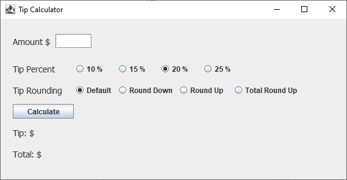
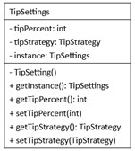
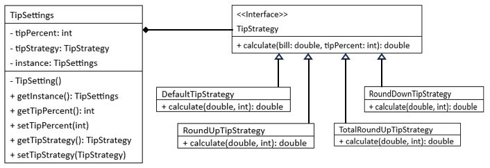

Lab3: Tip Calculator

Objectives
- Learn how to use and implement Singleton Design Pattern.
- Learn how to use and implement Strategy Design Pattern.
Work
- Tip Calculator calculates the tip based on the selection of
tip percent and tip rounding for the amount of bill.
- The program uses the singleton design pattern and the strategy
design pattern.
- Lab3.java is the main Java file which defines all the window
components. You don't need to make any changes to the file.
- TipSetting.java is a signleton class file.
- Complete the TipSettings class in the class file.
Its class diagram is shown below.

- TipStrategy is defined as an interface in TipStrategy.java.
It is implmented in four different tip strategy classes:
- TipStrategyDefault,
- TipStrategyRoundDown,
- TipStrategyRoundUp, and
- TipStrategyTotalRoundUp.
- The first three tip strategies are defined in their class files.

- The tip calculation of TipStrategyTotalRoundUp is as follows:
- tip = bill * tipPercent / 100
- total = Ceiling(tip + bill) // use Math.ceil
- finalTip = total - bill
- Complete the TipStrategyTotalRoundUp class in
TipStrategyTotalRoundUp.java.
=== End of Lab3 ===